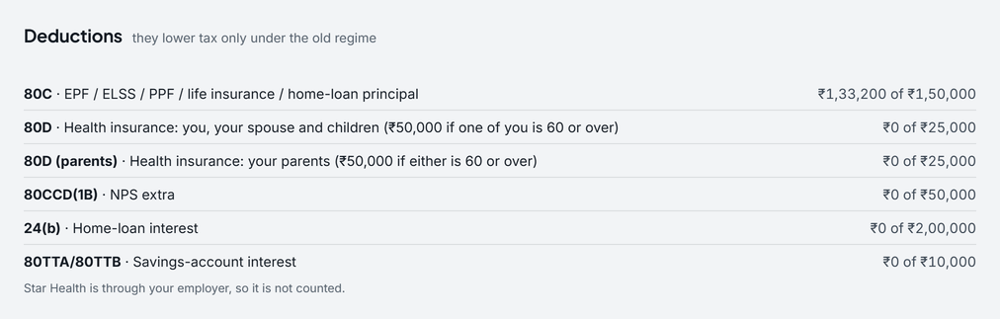

80D: health insurance, by whom a policy covers
- Category
- Tax · FY 2026-27
- By
- Reviewed
- Read
- 5 min
The two limits
| Whom the premium is for | Age | Limit a year |
|---|---|---|
| You, your spouse and children | under 60 | ₹25,000 |
| You, your spouse and children | one of you 60 or over | ₹50,000 |
| Your parents | both under 60 | ₹25,000 |
| Your parents | either 60 or over | ₹50,000 |
| Both, all 60 or over | the most 80D allows | ₹1,00,000 |
A premium counts when it is paid other than in cash (a preventive health check-up of up to ₹5,000, within these limits, may be paid in cash). A premium paid at once for several years counts a year's share in each year it covers. The new regime allows no 80D at all.
Four policies, worked through
A person aged under 60 records four health policies. A year of premiums is the premium × 12 ÷ the months between premiums:
| Policy | Premium | A year | Covers | 80D |
|---|---|---|---|---|
| Family floater | ₹28,000 a year | ₹28,000 | you, your spouse and children | towards your limit |
| Parents' policy | ₹11,000 a quarter | ₹44,000 | your parents, one of them 60 or over | towards your parents' limit |
| Group cover at work | — | — | through an employer, who pays it | not counted |
| Top-up | ₹6,000 a year | ₹6,000 | does not say whom it covers | not counted |
- Your limit: the family floater's ₹28,000 a year, held to ₹25,000: ₹25,000.
- Your parents' limit: ₹44,000 a year for a policy that covers someone 60 or over, inside its ₹50,000: ₹44,000.
- Not counted: the group cover, which the employer pays, and the top-up, which does not say whom it covers. If it covered you, your spouse and children it would add nothing here, as that limit is already full. If it covered your parents, it would count up to their limit's remaining ₹6,000.
80D for the year: ₹25,000 + ₹44,000 = ₹69,000.
What it does to the year's tax
A salary of ₹18,00,000 with ₹1,50,000 of 80C, in the old regime without and with the 80D of ₹69,000:
| Old, no 80D | Old, with 80D | |
|---|---|---|
| Salary | ₹18,00,000 | ₹18,00,000 |
| Standard deduction and 80C | −₹2,00,000 | −₹2,00,000 |
| 80D | not claimed | −₹69,000 |
| Taxable income | ₹16,00,000 | ₹15,31,000 |
| Tax for the year, with cess | ₹3,04,200 | ₹2,82,672 |
The 80D lowers the old regime's tax by ₹21,528: ₹69,000 of income that would have been taxed at 30%, plus 4% cess. On the same salary the new regime, which allows no 80D, comes to ₹1,50,800.
How Pocket works it out
Pocket's Protection page records each policy with whom it covers and whether one it covers is 60 or over.
The Tax page counts 80D from them, by those two limits, in the old regime's working. A policy through an employer, or one that does not say whom it covers, is named on the Tax page as not counted, never guessed. Pocket does not count a preventive check-up or medical bills paid for a parent of 60 or over who has no insurance. It is a planning estimate, not a tax return: the Income Tax Department and a chartered accountant have the final word.

- Each deduction against its limit: 80C is ₹1,33,200 of ₹1,50,000.
- A policy through an employer is named as not counted.
Questions
How much can be deducted under 80D?
₹25,000 for health insurance for you, your spouse and children, and ₹25,000 more for your parents; each limit is ₹50,000 where someone it covers is 60 or over, so ₹1,00,000 at most. Only the old regime allows it.
Does a group health policy from an employer count?
No. The employer pays its premium, so there is nothing of yours to deduct. Pocket lists such a policy as not counted.
Do parents have to depend on you for their premium to count?
No. The parents' limit is for a premium you pay for your mother or father, whether or not they depend on you.
Why does it matter whom a policy covers?
Because the two limits are separate. In the example the family floater's ₹28,000 is held to ₹25,000, while the parents' ₹44,000 fits inside their ₹50,000 limit.
Sources
- Income Tax Department: the Acts, rules, circulars and its own tax calculator, at incometaxindia.gov.in
- Income-tax Act, 2025, which replaces the Income-tax Act, 1961 from 1 April 2026 (FY 2026-27); the 1961 Act's section numbers are given too, as most forms and payslips still use them
- Finance Act, 2025: the new regime's slabs and the ₹12 lakh rebate, from FY 2025-26; and Finance Act, 2026 (Budget 2026), which left the slabs, the rebate and the surcharge as they were for FY 2026-27
- Income-tax Act, 1961, section 80D, and Income-tax Act, 2025, section 126: the two limits, the higher limit for someone 60 or over, and the premium paid other than in cash
Previous guide: HRA exemption, worked through
Pocket is free on Windows, macOS, Linux and Android, and keeps everything on your own device: download Pocket.